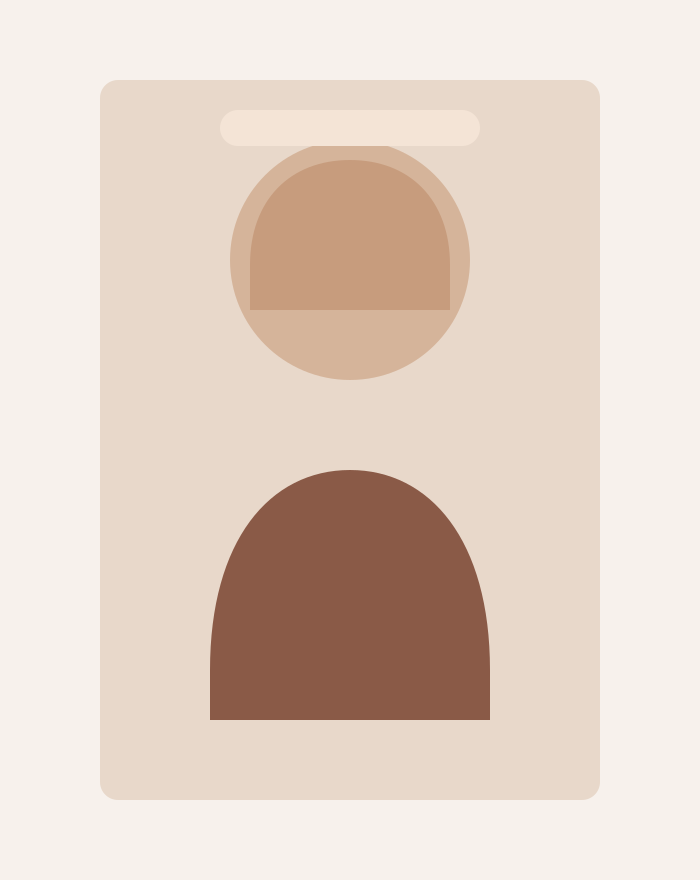
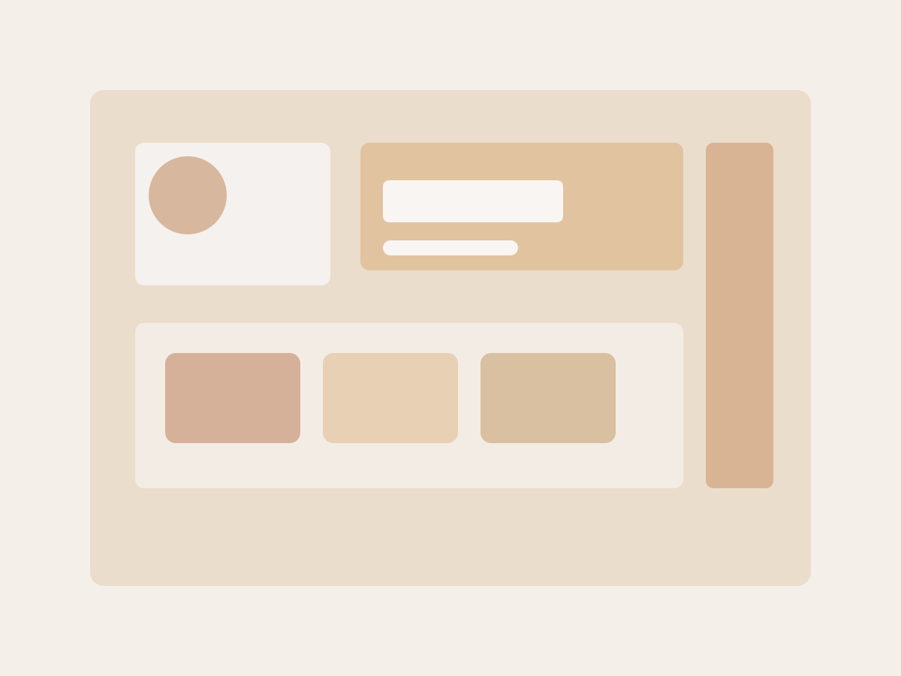
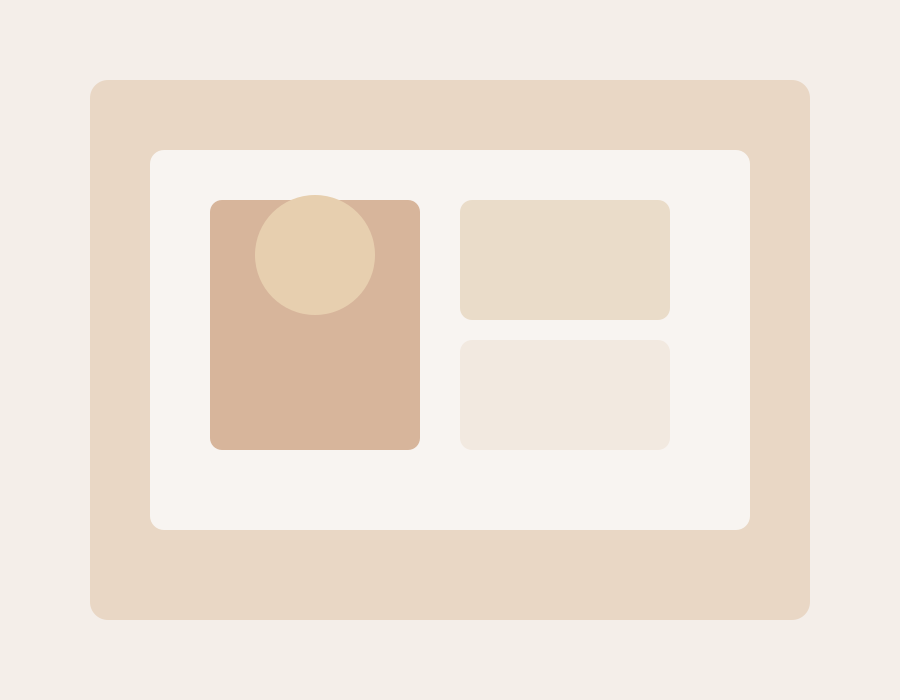
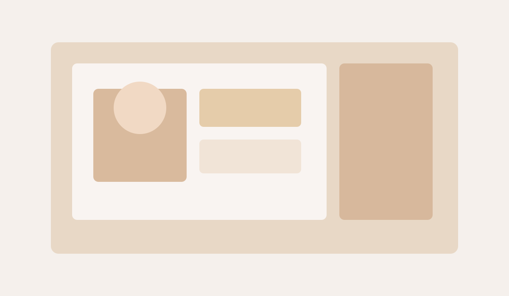

Psicoterapia
Processo individualizado para compreender emoções, comportamentos e desafios, desenvolvendo recursos para lidar com diferentes situações.
Psicologia Comportamental
Psicóloga Comportamental | CRP 06/138564
Atendimento acolhedor e individualizado para adolescentes e adultos neurodivergentes, com foco em autonomia, regulação emocional e qualidade de vida.

Sobre mim
Sou Heloisa Sampaio, psicóloga comportamental formada há 10 anos, com especialização em Arteterapia e Análise do Comportamento.
Minha atuação considera a história, o contexto e as singularidades de cada pessoa, construindo estratégias que façam sentido para a vida cotidiana.
Como posso ajudar
Processo individualizado para compreender emoções, comportamentos e desafios, desenvolvendo recursos para lidar com diferentes situações.
Intervenções voltadas a pessoas autistas, com TDAH, Altas Habilidades/Superdotação e deficiência intelectual.
Orientação a familiares, cuidadores e equipes para favorecer a aplicação de estratégias nos diferentes contextos da vida cotidiana.
Abordagem
Minha prática é fundamentada na Análise do Comportamento, nas Terapias Comportamentais Contextuais e, especialmente, na Terapia de Aceitação e Compromisso (ACT).
A ACT busca ampliar a flexibilidade psicológica: não elimina pensamentos ou sentimentos difíceis, mas ajuda a pessoa a se relacionar com essas experiências de maneira mais consciente e funcional.
Construção de caminhos e estratégias coerentes com os valores e objetivos de cada pessoa.
Desenvolvimento de regulação emocional, flexibilidade cognitiva, funções executivas e habilidades sociais.
Orientações claras e recursos concretos para levar o cuidado aos diferentes contextos da rotina.
Atendimento
Localização: Ribeirão Preto - SP
Formato: Atendimento individualizado para adolescentes e adultos.
Agendamento: Consulte disponibilidade pelo WhatsApp.
Público: Adolescentes e adultos, incluindo pessoas neurodivergentes.
Formato: Atendimento online, com orientação sobre o processo no primeiro contato.
Agendamento: Entre em contato para conhecer a disponibilidade.
Espaço



FAQ
O atendimento é individualizado e começa com uma conversa para compreender a demanda, alinhar objetivos e avaliar as possibilidades do processo psicológico.
Você pode enviar uma mensagem pelo WhatsApp ou Instagram. A partir desse contato, são orientados os próximos passos e a disponibilidade de atendimento.
Sim. Há atendimento online para adolescentes e adultos, com alinhamento das condições do processo no primeiro contato.
Entre em contato pelo WhatsApp, telefone, e-mail ou Instagram para tirar dúvidas e verificar a disponibilidade de atendimento.
Contato
Para iniciar uma conversa, entender mais sobre o atendimento ou tirar dúvidas, entre em contato pelos canais abaixo.